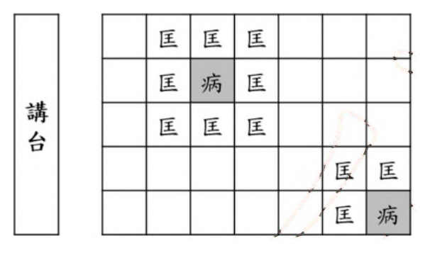
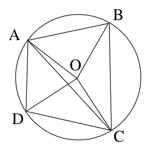
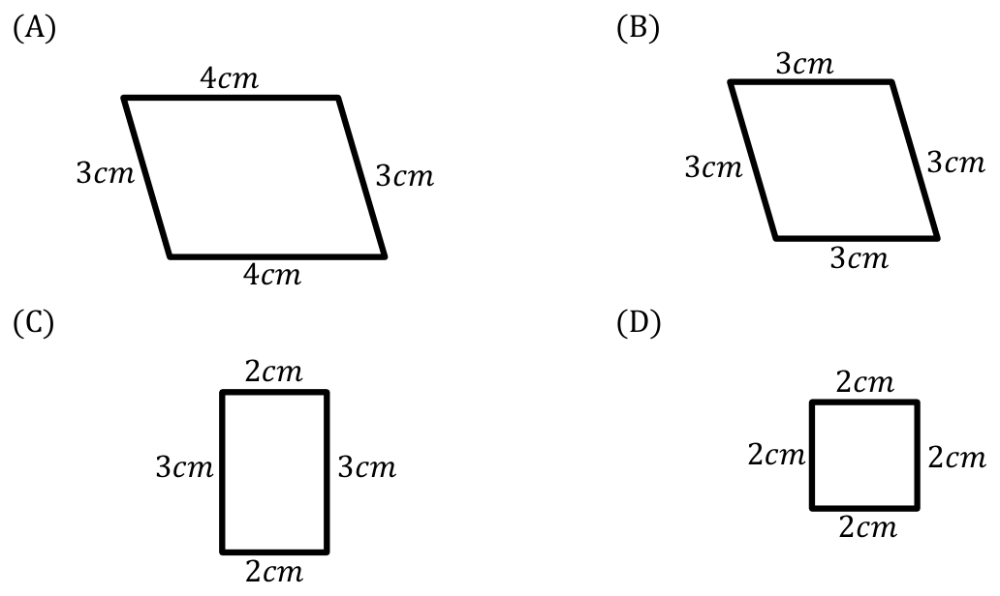
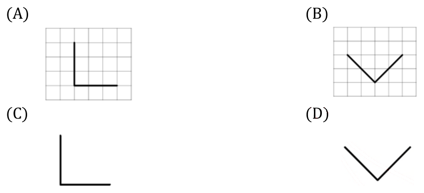
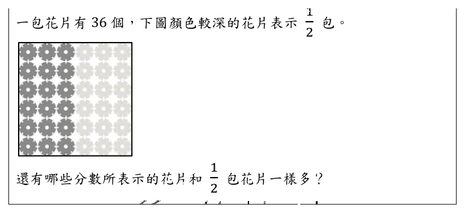
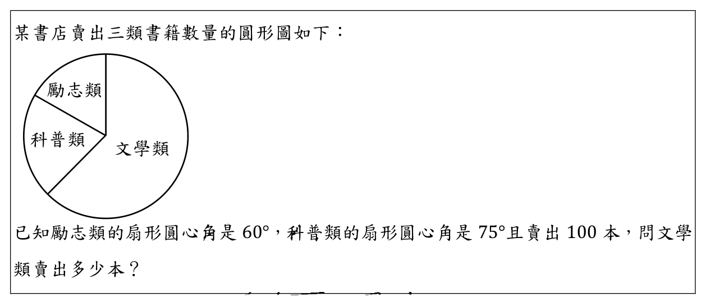

開卷有益 ／
教師檢定 ／ 國小・數學能力測驗 ／ 112 年112 年教師檢定國小・數學能力測驗試題與答案
這一頁是民國 112 年教師檢定國小・數學能力測驗的整份歷屆試題，共 26 題，題目與標準答案出自教育部教師資格考試歷屆試題（受託國立臺灣師範大學心理與教育測驗研究發展中心），其中 26 題附有詳解。以下逐題列出題幹、選項與答案；要計時作答或記錄成績，請用線上練習。
教育部原始場次代碼：tqa11230
線上作答這一科 →
全部 26 題
第 1 題
有四個算式如下： \[ \text{甲、}9876+\frac{1}{4321} \] \[ 乙、9876-\frac{1}{4321} \] 丙、\(9876 \times \frac{1}{4321}\) 丁、\(9876 \div \frac{1}{4321}\) 這些算式的計算結果，從大到小順序為何？
（A） 丙 > 甲 > 乙 > 丁（B） 丙 > 丁 > 甲 > 乙（C） 丁 > 甲 > 乙 > 丙（D） 丁 > 丙 > 甲 > 乙答案：（C）
詳解與考點 正解：甲＝9876+1/4321≈9876.00023，乙＝9876-1/4321≈9875.99977，丙＝9876×(1/4321)＝9876/4321≈2.286，丁＝9876÷(1/4321)＝9876×4321=42,674,196。四者中，丁遠大於其餘三者（達四千餘萬）；甲比原數 9876 多了一個極小的分數 1/4321，乙比原數 9876 少了同樣大小的分數，故甲＞9876＞乙；丙因乘以遠小於 1 的分數（1/4321≈0.00023），使乘積大幅縮小至僅約 2.286，遠小於甲、乙。綜合排序為丁＞甲＞乙＞丙，對應（C）。
A（丙＞甲＞乙＞丁）：把丙（僅約 2.286 的小數值）誤判為四者中最大者，忽略了「乘以遠小於 1 的分數」會使乘積大幅縮小、而非放大的基本運算規則；同時也把丁（乘以 4321 而放大至四千餘萬）排到最後，方向完全顛倒。
B（丙＞丁＞甲＞乙）：同樣誤把丙判斷為最大值，雖然正確地把丁排在甲、乙之前（判斷出除以小分數會使結果大幅放大），但仍未意識到丙的實際數值僅約 2.286，遠小於維持在 9876 上下的甲、乙，更遠小於丁。
D（丁＞丙＞甲＞乙）：正確判斷出丁為最大值，但誤把丙排在甲、乙之前，同樣忽略了丙的實際數值僅約 2.286，遠小於維持在 9876 附近的甲（略大於 9876）與乙（略小於 9876）。
本題考點：分數乘除對數值大小的影響。乘以小於 1 的正分數會使結果縮小、除以小於 1 的正分數（等同乘以其倒數）會使結果大幅放大，而加減一個微小分數只會使原數產生極小幅度的增減；解題關鍵是先判斷各運算對原數 9876 的影響方向與量級，再排序，而非直接依直覺猜測。
第 2 題
已知甲原有 300 元、乙原有 x 元, 若甲將自己錢的 \(\frac{1}{3}\) 分給乙, 乙拿到錢後再將他 全部錢的 \(\frac{1}{5}\) 分給甲。問乙現在有多少錢?
（A） \((x + 300) \times \frac{1}{5}\)（B） \((x + 300) \times \frac{4}{5}\)（C） \((x + 100) \times \frac{1}{5}\)（D） \((x + 100) \times \frac{4}{5}\)答案：（D）
詳解與考點 正解：甲原有300元，將自己錢的1/3分給乙：300×(1/3)=100元，故甲分給乙100元，甲剩下300−100=200元；乙拿到100元後，總額變為x+100元。接著乙將自己「全部」錢（即x+100元）的1/5分給甲：分出的金額為(x+100)×(1/5)，乙自己剩下的即為總額扣除分出部分，也就是全部的4/5，即(x+100)×(4/5)元。因此乙現在有(x+100)×4/5元，對應選項D。
A：「(x+300)×1/5」誤把甲原有的300元（而非甲實際分給乙的100元）直接併入x作為乙分錢前的總額，且把乙分給甲的比例（1/5）誤當成乙分錢後剩下的比例，兩處計算依據皆與正確過程不符。
B：「(x+300)×4/5」同樣誤用甲原有的300元而非甲實際分出的100元作為併入x的金額，雖然已正確使用剩下4/5的觀念，但併入的數字本身有誤。
C：「(x+100)×1/5」雖正確算出乙分錢前的總額為x+100元，但把乙分給甲的比例（1/5）當成乙自己剩下的比例，實際上(x+100)×1/5計算出的是乙分出去給甲的金額，而非乙最終留下的金額，屬於分錢比例對象搞反。
本題考點：分數應用題中「取幾分之幾」與「剩下幾分之幾」的區辨，以及分次轉手金額題型的正確變數代換。解題關鍵是每一步都要先算出當事人分錢前的正確總額，再依題意判斷所求的是分出的部分還是剩下的部分（剩下部分等於1減去分出比例）。
第 3 題
某鄉舉辦吉祥物票選活動,鄉民每人一票,票選結果統計表如下: 〔表格請至練習頁檢視〕 下列何者為吉祥物票選結果的眾數？
（A） 福氣豬（B） 溫柔兔（C） 7609（D） 30944答案：（A）
詳解與考點 正解：眾數是指一組資料中出現次數最多的類別或數值。此票選為每位鄉民各投一票，因此全體 30944 張選票即為原始資料，而票數統計欄位顯示「福氣豬」得 7609 票，為五個吉祥物中最高票，也就是在全部個別投票資料中，「福氣豬」這個類別出現的次數最多，故眾數為福氣豬，選A。
B：溫柔兔僅獲 5643 票，並非五者中票數最高者，不符合眾數（出現次數最多的類別）的定義。
C：「7609」是「福氣豬」這個類別對應的次數本身，而眾數指的是次數最多的「類別（福氣豬）」，並非該次數的數字，此為眾數與次數兩者定義的常見混淆。
D：「30944」是累積欄位末列的數值，即五個吉祥物得票數加總後的全鄉投票總人數，與「哪個類別出現次數最多」的眾數定義無關，屬於誤讀累積欄位所致的錯誤。
本題考點：統計量數中眾數（mode）的定義與辨識。眾數指資料中出現次數最多的類別本身，須與該類別的次數（frequency）、資料的總數（sample size）明確區分，避免把統計量的數值與量值所依附的類別混為一談。
第 4 題
投擲一顆公正的六面骰子,下列敘述何者正確?
（A） 每投擲6次,就會有一次出現6點（B） 投擲10次,連續出現6點是不可能的（C） 投擲300次,出現6點的次數可能超過65次（D） 投擲66000次後的結果,每個點數出現的次數必定相同答案：（C）
詳解與考點 正解：骰子公正，每次擲出任一點數的機率恆為1/6，但機率僅描述長期而言的趨勢，並不保證有限次數內的實際結果，不可用必然、不可能等絕對語氣看待單次或有限次的結果。投擲300次的期望出現次數為300×(1/6)=50次，但期望值只是理論平均，不是上限；實際次數會因隨機變動而偏離期望值，理論上300次全部出現6點也並非不可能，故出現6點的次數可能超過65次的敘述為真，選C。
A：把機率1/6誤解為每6次必出現一次6點，忽略每次投擲彼此獨立、結果不會按固定週期出現，這是典型的賭徒謬誤（gambler's fallacy），把機率的長期比例錯當成短期內的必然規律。
B：主張連續10次都出現6點是不可能的，但其機率為(1/6)的10次方，數值雖然極小，卻不等於零，理論上仍有可能發生，不能稱為不可能，這是把機率極低誤等同於機率為零。
D：主張66000次後每個點數出現的次數必定相同，但機率只保證各點數出現的比例會隨次數增加而趨近1/6（大數法則），並不保證次數完全相等，必定相同是過度絕對的宣稱。
本題考點：機率的長期頻率觀與大數法則（law of large numbers）。核心在辨析機率描述的是長期趨勢的比例，而非對短期或有限次數結果的絕對保證；常見誤解包括賭徒謬誤與把極低機率等同於零機率或趨近等同於完全相等。
第 5 題
有一長方體A,將A的長增加20%,寬減少10%,高減少10%後,變為長方體B;將A的長減少20%,寬增加10%,高增加10%後,變為長方體C。這三個長方體的體積關係為何?
（A） A > B > C（B） B > C > A（C） C > B > A（D） A = B = C答案：（A）
詳解與考點 正解：設長方體A的長、寬、高分別為L、W、H，體積為V=L×W×H。長方體B由A的長增加20%（乘以1.2）、寬減少10%（乘以0.9）、高減少10%（乘以0.9）而成，故B的體積=V×1.2×0.9×0.9。先算1.2×0.9=1.08，再乘0.9得1.08×0.9=0.972，即B的體積為A的97.2%。長方體C由A的長減少20%（乘以0.8）、寬增加10%（乘以1.1）、高增加10%（乘以1.1）而成，故C的體積=V×0.8×1.1×1.1。先算1.1×1.1=1.21，再乘0.8得1.21×0.8=0.968，即C的體積為A的96.8%。三者比較：A為100%、B為97.2%、C為96.8%，故三者關係為A > B > C，答案為A。
B：選項「B > C > A」誤把A本身當成三者中體積最小者。A未經任何比例增減，其乘積因子恆為1；B、C的乘積因子（0.972、0.968）皆小於1，故A必然大於B與C任一者，此選項方向完全顛倒。
C：選項「C > B > A」同樣誤判A為最小，且進一步把B、C的大小順序也弄反──0.968小於0.972，故C應小於B而非大於，此選項犯了兩層錯誤。
D：選項「A = B = C」誤以為一邊增加x%、另一邊減少x%會彼此抵銷、乘積維持為1。但百分比增減在乘法上並非線性抵銷：(1+0.1)×(1-0.1)=1.1×0.9=0.99，恆小於1；本題三個因子相乘後分別為0.972與0.968，皆明顯小於1且彼此不相等，並非簡單的加減互相抵銷。
本題考點：百分比變化在體積（三次相乘量）上的複合效應。體積是長寬高三個線性維度的乘積，各維度個別增減某百分比後，總體積變化率須將三個乘法因子依序相乘才能得出，不可直接加總百分比，也不可假設正負百分比相等時會完全抵銷。
第 6 題
某商店販售A牌原子筆一枝15元、B牌原子筆一枝10元。阿建有100元,他想要兩種品牌都至少買一枝,且將錢全部花完。他最多可以買幾枝?
（A） 2（B） 7（C） 8（D） 9答案：（D）
詳解與考點 正解：設購買A牌a枝（每枝15元）、B牌b枝（每枝10元），a、b皆為正整數（a≥1、b≥1），且總金額恰好花完100元，即15a+10b=100，化簡為3a+2b=20。因20與2b皆為偶數，3a也必須是偶數，故a必為偶數。逐一檢驗所有合法偶數解：a=2時，2b=20-6=14，b=7，驗算15×2+10×7=30+70=100，總枝數=2+7=9；a=4時，2b=20-12=8，b=4，總枝數=4+4=8；a=6時，2b=20-18=2，b=1，總枝數=6+1=7（a=8時3×8=24已超過20，無解）。由於B牌單價較低，a取最小的合法偶數（a=2）可換得最多B牌枝數，使總枝數最大，故最多可買9枝，選D。
A：「2」誤把A牌的枝數本身當成最終答案，忽略題目問的是兩品牌總枝數，而非其中一種品牌的枝數。
B：「7」是a=6、b=1這組解的總枝數，雖是合法解，但並非枝數最多的組合，選此答案代表未逐一檢驗所有a的偶數解、只取到其中一組便作答。
C：「8」是a=4、b=4這組解的總枝數，同樣是合法解，但忽略了a可以取更小的偶數（a=2）以換取更多B牌枝數，因B牌單價較低、多買B牌可用相同金額買到更多枝，進而使總枝數更大。
本題考點：二元一次不定方程式在整數限制下的最大化問題。解題步驟為先列出金額限制方程式，依奇偶性質判斷變數的合法取值範圍，再逐一列舉所有可行解並比較，把握單價較低者買得越多、總數量越多的直覺以快速鎖定最大總枝數的解。
第 7 題
設x為一個四位數,將x的十位數與百位數對調後,變成一個新的四位數y。有兩個敘述如下: 甲、若 x 是 3 的倍數, 則 y 一定是 3 的倍數 乙、若 x 是 5 的倍數, 則 y 一定是 5 的倍數 下列何者正確?
（A） 甲非恆真、乙非恆真（B） 甲恆真、乙恆真（C） 甲恆真、乙非恆真（D） 甲非恆真、乙恆真答案：（B）
詳解與考點 正解：設四位數x的千、百、十、個位數字依序為d1、d2、d3、d4，則x=1000d1+100d2+10d3+d4。將十位與百位對調後得新數y=1000d1+100d3+10d2+d4。就甲（3的倍數）而言：一個數是否為3的倍數，只取決於其各位數字之和，x的數字和為d1+d2+d3+d4，y的數字和為d1+d3+d2+d4，兩者數值完全相同（僅相加順序不同），故x是3的倍數則y也必為3的倍數，甲恆真。就乙（5的倍數）而言：一個數是否為5的倍數，只取決於其個位數字是否為0或5；對調十位與百位的操作完全未更動個位數字，x與y的個位數字同為d4，故x是5的倍數則y也必為5的倍數，乙亦恆真。甲、乙皆恆真，對應選項B，故選B。
A：「甲非恆真、乙非恆真」誤判了甲、乙皆為非恆真，常見的錯誤來源是誤以為對調十位與百位會改變數字之和（實際上加法滿足交換律，順序改變不影響總和），或誤以為此對調會影響個位數字（實際上個位數字d4自始至終未被交換，僅十位與百位這兩個位次互換）。
C：「甲恆真、乙非恆真」誤判乙為非恆真，可能誤以為對調十位與百位會連帶影響個位數字是否為0或5，但十位、百位與個位是三個獨立的位次，對調前兩者完全不涉及個位數字本身。
D：「甲非恆真、乙恆真」誤判甲為非恆真，可能誤以為數字位置的交換會改變各位數字之和，但數字和的計算只涉及加法，加法滿足交換律，位次互換並不改變總和的數值。
本題考點：整除判別法則中3的倍數看數字和、5的倍數看個位數字這兩條規則的應用。解題關鍵在辨識十位與百位對調這項操作，分別對數字和（不受影響，因加法可交換）與個位數字（同樣不受影響，因交換的是十位與百位、不涉及個位）這兩個判別依據的影響，從而分別確認甲、乙兩敘述是否恆真。
第 8 題
小明去看醫生,醫生開了一瓶藥水,每次須服用 6 c.c.。小明服用了六次後,才發現這六次都是服用 7 c.c.,此時藥水還剩下 \(\frac{1}{3}\) 瓶。若小明從第七次開始每次改服用 6 c.c.,則剩下的藥水足夠再服用三次嗎?剩下或不夠多少?
（A） 夠, 服用三次後還剩 3 c.c.（B） 夠, 服用三次後還剩 6 c.c.（C） 不夠, 最後一次少 3 c.c.（D） 不夠, 最後一次少 6 c.c.答案：（A）
詳解與考點 正解：設藥水總量為 V（c.c.）。小明前六次皆誤服 7 c.c.，共用去 6×7=42 c.c.；服用後題目說「還剩下 1/3 瓶」，即 V-42=(1/3)V，移項整理得 (2/3)V=42，解得 V=63（c.c.）。此時實際剩餘藥水＝63-42=21（c.c.），以 (1/3)×63=21 驗算相符。第七次起改為每次服用 6 c.c.，再服用三次共需 3×6=18（c.c.）。比較剩餘量與所需量：21-18=3（c.c.）＞0，表示藥水足夠再服用三次，且服用完三次後還剩 3 c.c.，故選（A）。
B：把三次的需求量誤算為 3×5=15（c.c.），即誤將改服用的劑量看成 5 c.c.而非題目所給的 6 c.c.；21-15=6，因而得出「還剩 6 c.c.」的錯誤數字，錯在計算需求量時所用的單次劑量有誤。
C：此選項算出的差距 3 c.c.其實與正確答案的數字相同，但判斷方向相反——把「剩餘量（21）大於需求量（18）」誤看成「剩餘量小於需求量」，因而得出「不夠，最後一次少 3 c.c.」的錯誤結論，錯在比較大小關係時方向顛倒。
D：同時犯下 B 的數字錯誤（誤將需求量算成 15 c.c.）與 C 的方向錯誤（誤判剩餘小於需求），兩重錯誤疊加，才會得出「不夠，最後一次少 6 c.c.」。
本題考點：由部分資訊（誤服後剩餘比例）反推總量的方程式建立，以及一元一次方程式的求解與代入驗算。解題步驟為先設未知數列出等量關係式求出總量，再分別算出實際剩餘量與後續所需量並比較大小，過程中須留意「總量的幾分之幾」與「已使用量」之間的關係不可混淆。
第 9 題
在密室逃脫遊戲中，有一個古代月曆板子如下： 〔表格請至練習頁檢視〕 板子背面有兩個線索：「大洪水將在三月 X 日降臨」和「\(Y+Z=38\)」。 問 X 是多少？
（A） 16（B） 20（C） 22（D） 24答案：（B）
詳解與考點 正解：月曆板子中，同一橫列（同一星期內）的日期數字逐格加1，同一直行（相鄰星期同一星期幾）的日期數字逐列加7。根據板子上Y、Z兩格與所求X的位置關係，可列出Y+Z=2×(X-1)的關係式。代入線索「Y+Z=38」，得2(X-1)＝38，兩邊除以2得X-1=19，故X=20，即大洪水將在三月20日降臨，答案為B。
A：（A）16代入2(X-1)＝2×15=30，不等於38，此誤差通常源於誤將X與Y、Z間的位置間距少算，使關係式左側之值偏小。
C：（C）22代入2(X-1)＝2×21=42，超過38，是把X與Y、Z間距抓得過大，運算方向與A相反，同樣未能滿足「Y+Z=38」之條件。
D：（D）24代入2(X-1)＝2×23=46，偏離38最遠，同樣屬於位置間距誤判，且誤差幅度更大，顯示對月曆格位間等差關係的掌握更加薄弱。
本題考點：月曆推理（calendar puzzle）中，同列（星期內）逐格加1、同行（跨週同星期幾）逐列加7的等差規律，以及依題目給定之未知格位間的線性關係式（如Y+Z=2(X-1)）代入求解的技巧。
第 10 題
已知甲、乙、丙三位員工今年年薪總和為300萬元，且乙、丙的年薪總和是甲的2倍。 若要將這三位員工的明年年薪都調成相同，其中甲的明年年薪比今年高10萬元，且 丙的明年年薪比今年高30萬元。下列敘述何者正確？
（A） 乙員工的今年年薪為120萬元（B） 甲、乙、丙三位員工年薪皆被調高（C） 三位員工明年年薪總和為300萬元（D） 今年年薪的金額依序為甲 < 乙 < 丙答案：（A）
詳解與考點 正解：設甲、乙、丙今年年薪分別為a、b、c（單位：萬元）。由「三人今年年薪總和為300萬元」得a+b+c=300；又「乙、丙年薪總和是甲的2倍」得b+c=2a。將b+c=2a代入第一式：a+2a=300，即3a=300，解得a=100（萬元），故b+c=200（萬元）。三人明年年薪調成相同金額，設為M：由「甲的明年年薪比今年高10萬元」得M=a+10=100+10=110（萬元）；由「丙的明年年薪比今年高30萬元」得M=c+30=110，解得c=110-30=80（萬元）。代入b+c=200，得b=200-80=120（萬元）。故乙今年年薪為120萬元，選（A）。
B：稱三人年薪皆被調高，此為誤判。乙今年年薪120萬元，明年調整為與甲、丙相同的110萬元，較今年減少10萬元，是被調降而非調高；僅甲（100→110，＋10萬元）與丙（80→110，＋30萬元）被調高，並非三人皆調高。
C：稱明年三位員工年薪總和為300萬元，此為誤判。明年三人年薪皆為110萬元，總和應為3×110=330（萬元），並非維持300萬元；差異來自甲、丙合計調升40萬元（10+30），乙調降10萬元，淨增加30萬元（330-300=30），與C所述不符。
D：稱今年年薪大小關係為「甲＜乙＜丙」，此為誤判。由前述計算，今年年薪為甲100萬元、乙120萬元、丙80萬元，實際大小關係應為丙（80）＜甲（100）＜乙（120），與D所述順序不同（D誤將丙排在最大）。
本題考點：聯立方程式與比例關係的應用。解題步驟為（1）依題目敘述列出未知數之間的等量關係式，（2）利用代入消去法求解單一未知數，（3）逐步回代求出其餘未知數，並依題目要求（調薪後總和是否相同、大小關係是否成立）逐一驗算各選項的正確性，不可僅憑部分資訊臆測。
第 11 題
二次函數 \(y=ax^2+6x+c\) 的圖形如下。 下列何者正確？
（A） \(c < 0\), \(36 - 4ac > 0\)（B） \(c < 0\), \(36 - 4ac < 0\)（C） \(c > 0\), \(36 - 4ac > 0\)（D） \(c > 0\), \(36 - 4ac < 0\)答案：（B）
詳解與考點 正解：本題由拋物線y=ax²+6x+c的圖形判斷係數a、c的正負與判別式36-4ac的正負。由圖形顯示，該拋物線開口向下、且整條曲線皆落在x軸下方，不與x軸相交。開口向下且圖形恆在x軸下方，代表對任意x，y=ax²+6x+c恆為負；取x=0代入，y=a(0)²+6(0)+c=c，故c必為負，即c<0。又因曲線與x軸沒有交點，方程式ax²+6x+c=0無實數解，判別式須小於零，即6²-4ac=36-4ac<0。同時滿足c<0與36-4ac<0的選項為B。
A：「c<0，36-4ac>0」c的判斷正確，但把「圖形與x軸不相交」誤看成「與x軸相交於兩點」，導致判別式方向判斷錯誤而寫成36-4ac>0；判別式大於零代表方程式有兩相異實根，與圖形完全不與x軸相交的敘述矛盾。
C：「c>0，36-4ac>0」把x=0時y=c的正負看反，誤判為c>0；同時如同A一般誤將判別式方向寫反，兩處判斷皆與圖形不符。
D：「c>0，36-4ac<0」判別式方向正確（拋物線不與x軸相交），但誤判y軸截距為正，把開口向下、圖形恆在x軸下方時y=c應為負的事實看反。
本題考點：二次函數圖形與係數關係的判讀。作答關鍵有二：一是由開口方向與圖形是否跨越x軸判斷x=0時的函數值（即常數項c）之正負；二是由圖形與x軸的交點數判斷判別式b²-4ac的正負（不相交為負、相切為零、相交兩點為正），兩者須分別對應圖形的兩項特徵，不可混淆。
第 12 題
疫情大流行期間,若某位學生染疫,則以該生座位為中心的九宮格進行匡列,示例圖如下(病:表示染疫,匡:表示匡列): 已知某班有35人,座位排成5行7列。某日班上有2名學生染疫,問被匡列的學生最少有多少人?

（A） 3（B） 4（C） 6（D） 10答案：（B）
詳解與考點 正解：座位排成5排7列（共35人），依例圖，「匡列」是以染疫者座位為中心的九宮格中，扣除染疫者本人之外的鄰接座位；九宮格若被邊界截斷，鄰接格數會隨座位所在位置而減少——角落座位（如第1排第1列）僅有3個鄰接格，邊排但非角落的座位（如第1排第2列）有5個鄰接格，完全在內部、不靠邊界的座位則有8個鄰接格。要使被匡列人數最少，應把2名染疫者安排在鄰接格數本身較少、且彼此的匡列範圍重疊最多之處，即「角落座位＋緊鄰角落的邊排座位」這一組合。設P1＝（第1排，第1列）為角落，其鄰接格為（1,2）（2,1）（2,2）共3格；P2＝（第1排，第2列）為邊排，其鄰接格為（1,1）（1,3）（2,1）（2,2）（2,3）共5格。因兩位染疫者本人不算被匡列，須從各自鄰接格中剔除對方座位：P1的鄰接格扣除P2本身後剩（2,1）（2,2）；P2的鄰接格扣除P1本身後剩（1,3）（2,1）（2,2）（2,3）。兩者取聯集為（2,1）（2,2）（1,3）（2,3），共4格，即被匡列人數的最小值，故選（B）。
A：（A）3人在此座位表中無法達成。即使把染疫者安排在鄰接格數最少的角落座位（3格），只要第二位染疫者座位存在，其鄰接範圍至少會為聯集新增1格以上，兩者合計不可能低於4人；3人這個數字，是誤把單一角落染疫者的鄰接格數（3格）直接當成兩位染疫者的總匡列人數，忽略了第二位染疫者也會產生自己的鄰接範圍。
C：（C）6人，是把2位染疫者分別安排在兩個互不相鄰的角落（如第1排第1列與第1排第7列），兩者的鄰接範圍完全不重疊，各自3個鄰接格相加（3+3=6）所得；此安排雖然各自都用到鄰接格數最少的角落位置，卻沒有利用「讓兩人鄰接範圍重疊」這個進一步縮減總人數的關鍵，故非最少匡列人數的安排。
D：（D）10人，是把2位染疫者安排在彼此相鄰、但都位於內部（不靠邊界）的座位，此時兩個各有8個鄰接格的九宮格重疊成一個3×4區塊，扣除2位染疫者本身（12-2=10）所得；此安排雖然兩人的匡列範圍確實有重疊，但因座位位於內部、單一鄰接格數（8格）遠高於角落或邊排位置，未能利用邊界縮減鄰接格數的優勢，故匡列人數反而較多。
本題考點：座位表匡列問題的最小化策略。核心是理解九宮格（Moore鄰域）在有限邊界內會因位置（角落、邊排、內部）而有不同的鄰接格數，並掌握「把多個中心點安排在鄰接格數少且彼此範圍重疊最多之處」可使聯集後的總匡列人數最小化，屬於集合聯集（不重複計數）與邊界效應的綜合應用。
第 13 題
已知 ABCD 為圓內接四邊形, 圖心 O 到各頂點距離相等, 如下圖。 若圓周角 ∠DAC = x°, 求 ∠DOC = ?

（A） \((90-x)°\)（B） \((90-2x)°\)（C） \(x°\)（D） \(2x°\)答案：（D）
詳解與考點 正解：圓周角定理指出，同弧所對的圓心角是圓周角的2倍。本題中，∠DAC為頂點在圓周上的A點、所對弧為弧DC（不含A的劣弧）的圓周角；∠DOC則是頂點在圓心O、同樣以弧DC為底的圓心角。兩者所對的是同一段弧，依圓周角定理：圓心角＝2×圓周角，即∠DOC=2×∠DAC=2×x°＝2x°，故選D。
A：此選項是把∠DOC與∠DAC的關係誤設為兩者互為餘角（相加90°），並無圓周角定理依據；圓周角與其所對圓心角之間僅有「2倍」關係，不存在互餘的必然幾何限制。
B：此選項同樣是套用「與某直角三角形內角互餘」的錯誤類比，把2x°這個正確的倍數關係，又拿去和90°做減法，屬於在A選項錯誤基礎上進一步複合出的錯誤運算，並無定理依據。
C：此選項是誤把圓心角與圓周角視為相等（即誤用「同弧圓周角相等」的定理於圓心角與圓周角之間），忽略了圓心角須為同弧圓周角的2倍，才會得出兩者相等的錯誤結論。
本題考點：圓周角定理（Inscribed Angle Theorem），即同一弧所對的圓心角恆為圓周角的2倍；解題關鍵在正確辨認∠DAC與∠DOC是否對應同一段弧，並代入「圓心角＝2×圓周角」的關係式求解。
第 14 題
有關「取概數」的教學,教師布了一數學問題「百貨公司週年慶活動,爸爸想買一台現金價為25420元的冰箱,但他沒帶現金只帶提款卡,而提款機只提供千元鈔票。問爸爸至少要提領多少元才夠?」這個布題最適合教哪一種「取概數」的方法?
（A） 用四捨五入法取至千位（B） 用四捨五入法取至百位（C） 用無條件進入法取至千位（D） 用無條件捨去法取至百位答案：（C）
詳解與考點 正解：冰箱現金價25,420元，提款機只提供千元鈔票，故爸爸提領的金額必須是千元的整數倍，且不可低於25,420元，否則現金不足以支付。若對25,420使用無條件進入法取至千位，即千位以下的數字（420）無論多寡一律進位，得26,000元；26,000元大於25,420元且為千元整數倍，能確保現金足夠支付，故選C。
A：用四捨五入法取至千位，依千位以下的420（不足500）捨去，得25,000元，小於25,420元，現金不足以支付冰箱價款。
B：用四捨五入法取至百位，依百位以下的20（不足50）捨去，得25,400元，同樣小於25,420元，且非千元整數倍，提款機無法提供此金額。
D：用無條件捨去法取至百位，直接捨去百位以下的20，得25,400元，不僅金額仍小於25,420元、不足以支付，也非千元的整數倍，提款機同樣無法提供。
本題考點：取概數方法（四捨五入、無條件進入、無條件捨去）在生活情境中的選用。當情境要求至少要達到某個門檻（如提款金額須涵蓋商品價格）時，須用無條件進入法以確保結果不小於原數；情境要求不超過某上限時才適用無條件捨去法；四捨五入法則不保證方向正確，不適用於此類保底情境。
第 15 題
教師在教線對稱圖形時,若要舉一個「非例(non-example)」的圖形,下列何者最合適?

本題選項為上圖中的 A／B／C／D，請對照圖片作答。
答案：（A）
詳解與考點 正解：「非例」指的是不具備該概念屬性、用來與正例對照以釐清概念邊界的例子，因此本題要找的是「不是線對稱圖形」的那一個。四邊長依序為 4、3、4、3 且四角均非直角的一般平行四邊形，只有以對角線交點為中心的點對稱（旋轉半圈可重合），任何一條直線都無法把它折成完全疊合的兩半，並不是線對稱圖形，最適合當非例，故選（A）。
B：四邊皆為 3 的平行四邊形即菱形，兩條對角線都是對稱軸，沿任一條對折可完全疊合，是線對稱圖形，只能當正例。
C：長 3、寬 2 的長方形，通過兩組對邊中點的兩條直線都是對稱軸，是線對稱圖形，只能當正例。
D：邊長 2 的正方形，除通過對邊中點的兩條直線外，兩條對角線也是對稱軸，共四條，是線對稱性質最明顯的正例。
本題考點：概念教學中正例與非例的選用，以及平行四邊形家族的對稱性。一般平行四邊形有點對稱而無線對稱，是最容易被誤認為線對稱的圖形；正因為它「很像」卻不具備該屬性，才是釐清概念邊界最有效的非例。菱形、長方形、正方形都是平行四邊形的特例且都具線對稱，只能當正例。挑非例的原則是選「與正例相近但關鍵屬性不同」者，才能讓學童把注意力放在對稱軸存在與否，而不是圖形的外觀。
第 16 題
飲料店奶茶的配方為「每一份奶茶是5杯紅茶配2杯牛奶」(杯子大小相同)。有四位學童的說法如下: 甲、紅茶和牛奶的比值是 \(\frac{2}{5}\) 乙、牛奶和奶茶的比是2:7 丙、紅茶的用量一定比牛奶多3杯 丁、紅茶的用量一定是牛奶的2.5倍 哪些學童的說法正確?
（A） 只有甲、丙（B） 只有乙、丁（C） 只有甲、乙、丙（D） 只有乙、丙、丁答案：（B）
詳解與考點 正解：奶茶配方為紅茶：牛奶＝5:2，此比例在等比例調整下恆維持不變，一份奶茶共 5+2=7 杯。乙、牛奶佔奶茶的比例為 2:7（牛奶 2 杯佔全部 7 杯），此比例不隨配方倍數放大縮小而改變，故乙正確；丁、紅茶用量與牛奶用量的倍數關係為 5÷2=2.5 倍，此倍數關係同樣恆定不變，故丁正確。乙、丁皆正確，故答案為（B）。
A（甲丙）：甲說「紅茶和牛奶的比值是 2/5」，把比值的前後項顛倒了——比值應以「紅茶：牛奶」的順序計算為 5/2，而非 2/5，故甲錯誤；丙說「紅茶的用量一定比牛奶多 3 杯」，此差值只在「恰好一份」（紅茶 5 杯、牛奶 2 杯，差 3 杯）時成立，若配方等比例放大（例如做兩份，紅茶 10 杯、牛奶 4 杯），差值變為 6 杯而非 3 杯，可見「固定多 3 杯」不會隨配方倍數維持不變，丙錯誤，（A）因甲、丙皆錯誤而不成立。
C（甲乙丙）：乙正確，但甲、丙皆錯誤（理由如前段所述），故（C）因含甲、丙而不成立。
D（乙丙丁）：乙、丁皆正確，但丙「紅茶的用量一定比牛奶多 3 杯」這個差值僅在「恰好一份」時成立，若配方等比例放大則差值不再是 3 杯，並非固定不變的關係，故（D）因含丙而不成立。
本題考點：比與比值的性質。比（如 5:2、2:7）與倍數關係（如紅茶是牛奶的 2.5 倍）在等比例縮放下維持不變，但「固定差值」（如多 3 杯）不具備這種不變性，只在特定倍數下成立；此外須留意比值的計算順序（前項除以後項，不可顛倒），這是本題最容易出錯之處。
第 17 題
關於「重量」的敘述,下列何者不是學童的迷思概念?
（A） 將某物體切割後,總重量會改變（B） 體積比較大的物體,重量就比較重（C） 某物體的形狀改變後,重量會不一樣（D） 兩物體放在天平上,下垂那一端的物體比較重答案：（D）
詳解與考點 正解：本題要找的是「不是」迷思概念的選項，即敘述本身正確、符合科學事實者。天平是測量重量（質量）的標準工具，其原理是重量較大的一端因重力較大而下沉，天平傾斜方向如實反映兩物體的輕重關係，這是正確的科學認知，並非學童的錯誤概念，故選（D）。
A：這是典型的「重量保留」（conservation of weight）迷思。物體經切割後，總質量不會因切割動作而改變（忽略切割過程中材料損耗），總重量應維持不變；若學童誤以為切割後總重量會改變，代表尚未建立保留概念，此為迷思概念。
B：這是「體積—重量混淆」的迷思。學童常直覺地將體積大小等同於重量輕重，忽略物質密度的差異；例如同體積的保麗龍遠比鐵塊輕，可見體積大不必然重量重，此為迷思概念。
C：這同樣是「重量保留」的迷思，只是操弄的變因是形狀而非切割。物體改變外觀形狀（如將黏土捏塑成不同造型）並不會改變其質量總量；若學童認為形狀改變會導致重量隨之改變，即為典型的保留概念缺乏。
本題考點：兒童重量概念發展中的保留概念（conservation of weight）與體積—重量混淆兩類常見迷思。保留概念指物體的物理量不因外觀形變（切割、捏塑）而改變；體積—重量混淆則是忽略密度差異、誤將體積大小當作重量判準的直覺推理。
第 18 題
關於「直角」的辨識, 對學童而言, 下列何者最簡單?

本題選項為上圖中的 A／B／C／D，請對照圖片作答。
答案：（A）
詳解與考點 正解：辨識直角的難度受兩個因素影響——有沒有可對照的參考格線，以及角的兩邊是否處於水平與鉛直的標準方位。畫在方格背景上、兩邊分別沿著格線呈鉛直與水平的那一個角同時具備兩項助力：學童可直接以格線比對，甚至只憑「像字母 L、像書本的角」這樣的整體視覺印象就能判定，是四者中最容易的，故選（A）。
B：雖然也有方格背景可參照，但角被旋轉成 V 字形，兩邊都與格線斜交，無法直接沿格線比對，學童必須先在心中把圖形轉回標準方位，難度較高。
C：角雖是水平與鉛直的標準方位，但沒有方格背景，少了可直接比對的參考線，只能靠視覺印象或另找工具檢驗，難度較高。
D：既沒有方格背景，角又被旋轉成斜置的 V 字形，兩項助力全無，是四者中最難的情形。
本題考點：幾何圖形辨識的難度變因——方位與參照。學童早期的角概念高度依賴整體視覺樣板，因此「標準方位加上格線」最易、「旋轉方位又無格線」最難。教學上應先以標準方位建立直角的樣板，再刻意變換方位並去除格線，讓學童改用「兩邊互相垂直」的性質而非外觀來判斷，避免形成「只有像 L 的才是直角」這種迷思概念。
第 19 題
針對教學目標「在單位分數內容物為整數個物的情境下, 找出給定分數的等值分數」, 教師布了一教學活動如下: 一包花片有 36 個, 下圖顏色較深的花片表示 \(\frac{1}{2}\) 包。 還有哪些分數所表示的花片和 \(\frac{1}{2}\) 包花片一樣多? 下列哪個分數所表示的花片, 無法藉此活動達成教學目標?

（A） \(\frac{2}{4}\) 包（B） \(\frac{3}{6}\) 包（C） \(\frac{4}{8}\) 包（D） \(\frac{9}{18}\) 包答案：（C）
詳解與考點 正解：題幹的限制是「單位分數內容物為整數個物」，因此除須與1/2包等值，分母還必須能整除36。1/2包＝36÷2=18個花片。（C）4/8包雖有4/8=1/2，但1/8包＝36÷8=4.5個，不能用整數個花片表示，故選C。
A：（A）2/4包中，1/4包＝36÷4=9個，2/4包＝2×9=18個，能具體操作。
B：（B）3/6包中，1/6包＝36÷6=6個，3/6包＝3×6=18個，符合條件。
D：（D）9/18包中，1/18包＝36÷18=2個，9/18包＝9×2=18個，符合條件。
本題考點：等值分數與單位分數的具體表徵；先確認分數值是否相等，再檢查總物數能否被分母整除，使每一單位分數對應整數個物。
第 20 題
在「時間」的教學中, 有一些活動如下: 甲、記錄自己哪時候起床 乙、記錄自己洗澡洗了多久 丙、記錄自己跑步跑了多久 丁、記錄自己哪時候開始寫作業 哪些是屬於記錄「時間量」的活動?
（A） 只有甲、乙（B） 只有甲、丁（C） 只有乙、丙（D） 只有丙、丁答案：（C）
詳解與考點 正解：時間教學須區分「時刻」（某一時間點，如幾點幾分）與「時間量」（經過時間的長短，如經過了多久）。乙、記錄洗澡「洗了多久」，是持續時間的長短，屬於「時間量」；丙、記錄跑步「跑了多久」，同樣是持續時間的長短，屬於「時間量」。乙、丙皆屬時間量，故答案為（C）。
A（甲乙）：甲「記錄自己哪時候起床」記錄的是起床的時間點，屬於「時刻」而非「時間量」，故（A）因含甲而錯誤。
B（甲丁）：甲、丁皆記錄的是某一時間點（起床時刻、開始寫作業時刻），二者皆屬「時刻」，不含任何「時間量」的活動，故（B）完全錯誤。
D（丙丁）：丙雖正確屬時間量，但丁「記錄自己哪時候開始寫作業」記錄的是開始的時間點，屬於「時刻」而非「時間量」，故（D）因含丁而錯誤。
本題考點：時刻與時間量的區辨。時刻回答「什麼時候」（時間軸上的一個定點），時間量回答「經過多久」（兩個時刻之間的差距）；甲、丁記錄的是活動發生的起點時刻，乙、丙記錄的是活動本身持續的長度，這正是此類教學活動設計題最常見的混淆之處。
第 21 題
有一教學活動描述如下: 教師給每位學童6個小白積木進行堆疊，以下為其中四位學童堆疊出的形體： 甲 乙 丙 丁 教師：這四個形體的體積有沒有一樣？形狀有沒有一樣？ 教師提問的目的，主要是協助學童建立何種數學概念？
（A） 等積異形（B） 體積公式（C） 柱體的概念（D） 體積與表面積的關係答案：（A）
詳解與考點 正解：每位學童皆使用相同的6個小白積木進行堆疊，由於積木數量相同，四個形體所占的體積必然一致；然而積木可以有不同的排列組合方式，堆疊出的外觀形狀卻可能互不相同。教師提問「這四個形體的體積有沒有一樣？形狀有沒有一樣？」，正是要引導學童透過操作與比較，親自發現「體積相同、形狀（外形）不同」這個現象，這正是選項A「等積異形」所指的數學概念，故選（A）。
B：（B）體積公式指的是以長寬高相乘等方式計算體積的公式化程序，本活動只以積木個數直接對應體積（每塊積木體積相同、6塊即為6倍積木體積），並未涉及量測邊長、代入公式計算或推導體積公式，與體積公式的概念無關。
C：（C）柱體的概念指辨認上下底面全等、側面平行的立體圖形特徵，題目中學童以積木自由堆疊出的形體未必具備柱體的結構特徵，教師提問的重點也不在辨認形體是否為柱體，而在比較體積與形狀是否相同，故與柱體概念無關。
D：（D）體積與表面積的關係涉及在體積固定或變動的情況下，比較不同排列方式所產生的表面積差異；教師的提問僅止於「體積有沒有一樣、形狀有沒有一樣」，並未要求學童計算或比較表面積，活動設計上也未提供比較表面積所需的操作，故與此概念無關。
本題考點：等積異形（體積相同、形狀不同）的操作型概念建立。透過固定積木數量、允許自由堆疊排列的活動設計，讓學童在具體操作中體會「體積」是量的多寡、「形狀」是排列的樣態，兩者可以互相獨立變化，是國小低年級建立量與形分化概念的典型教學手法。
第 22 題
學童解決「找出兩數的最大公因數」有三種解法。以「找出 24 和 16 的最大公因數」為例，此三種解法如下： 〔表格請至練習頁檢視〕 依據概念的發展，此三種解法合理的安排順序為何？
（A） 甲 → 丙 → 乙（B） 乙 → 甲 → 丙（C） 乙 → 丙 → 甲（D） 丙 → 甲 → 乙答案：（A）
詳解與考點 正解：甲法直接依「因數」與「公因數」的定義，逐一列出24和16所有的因數（24的因數：1、2、3、4、6、8、12、24；16的因數：1、2、4、8、16），再從中找出兩者共同且最大者（8），完全依定義操作、最具體、最貼近初學者對「公因數」概念的理解，適合作為概念發展的起點。丙法則是質因數分解法，先將24與16分別分解為質因數連乘（24等於2×2×2×3，16等於2×2×2×2），再取兩者共同的質因數相乘（2×2×2等於8），此法建立在「質因數」與「唯一分解」概念之上，抽象程度高於甲法的逐一列舉。乙法是短除法，以短除方式反覆除以兩數的公因質數（2、2、2）直到商互質為止，再將除數連乘（2×2×2等於8），這其實是質因數分解概念的精簡記法與計算捷徑，效率最高但也最抽象——學生須先理解「反覆除以公因質數」背後就是在做質因數分解，才能正確使用而不流於機械操作，故應安排在最後。依「由具體到抽象、由定義理解到效率化算法」的概念發展順序，合理安排為甲→丙→乙，選（A）。
B、C：（B）乙→甲→丙、（C）乙→丙→甲皆把最抽象、最依賴質因數分解原理理解的短除法（乙）排在最前面，而把最具體、最貼近定義的列舉法（甲）排在其後甚至最後，違反由具體到抽象的學習發展順序——學生若尚未理解「因數」「公因數」的基本定義，直接學習短除法的操作程序，容易流於背誦步驟而不解其原理。
D：（D）丙→甲→乙把質因數分解法（丙）排在列舉法（甲）之前，同樣不符合由具體定義出發的順序；學生應先透過列舉因數具體掌握「公因數」的意義，才適合進一步學習分解質因數、再學習其精簡記法短除法。
本題考點：最大公因數（GCD）教學的概念發展順序。求兩數最大公因數的三種常見方法——列舉因數法、質因數分解法、短除法——分別對應由具體到抽象、由定義理解到程序效率化的不同認知階段，教學安排應依此順序漸進，避免學生在未理解原理前就直接學習高效但抽象的簡記算法。
第 23 題
有一數學問題如下: 某書店賣出三類書籍數量的圓形圖如下: 已知勵志類的扇形圓心角是60°,科普類的扇形圓心角是75°且賣出100本,問文學類賣出多少本? 學童要解決此問題,最不需要用到下列哪一個概念?

（A） 周角 360°（B） 分數概念（C） 比例概念（D） 扇形面積答案：（D）
詳解與考點 正解：圓形圖（圓餅圖）以圓心角的大小表示各類別占全體的比例，並非以扇形的實際面積表示，因此解題全程不需要使用「扇形面積」公式。已知勵志類圓心角60°、科普類圓心角75°且賣出100本，先用周角360°扣除已知兩類角度，求得文學類圓心角＝360°－60°－75°＝225°；再以比例關係求文學類本數：科普類與文學類的圓心角之比等於本數之比，即75:225=100：文學類本數，故文學類本數＝100×（225÷75）＝100×3=300（本）。全程只用到角度的加減、分數（比例式中的225/75）與比例概念，未涉及任何長度、半徑或面積的計算，故最不需要的概念是（D）扇形面積。
A：（A）「周角360°」是必要概念，因為文學類的圓心角須由周角扣除已知的勵志類60°與科普類75°才能求得（360-60-75=225°），若不知周角為360°便無法定出文學類的角度。
B：（B）「分數概念」是必要概念，因為要從科普類「75°、100本」的關係推算文學類的本數，須將角度轉換為占全圓的分率（如225/360，或用75:225的比例式），這正是分數（比值）的運用。
C：（C）「比例概念」是必要概念，本題求解的核心即是「圓心角之比＝本數之比」這項比例關係，透過科普類已知的角度與本數，以比例式推算出文學類的本數，若不具比例概念便無法列出正確的算式。
本題考點：圓形圖（圓餅圖）的判讀與比例應用。圓餅圖以圓心角表示各類別占全體的比例，求某類別數量須用「圓心角之比＝數量之比」的比例關係，並輔以周角360°與分數（比值）概念；「扇形面積」則是另一組獨立的幾何公式（與半徑有關），與圓餅圖依角度判讀比例的原理無關，是本題的無關干擾概念。
第 24 題
教師請學童測量教室內布告欄的邊長(130公分)，以下是四位學童的做法： 甲、我用有刻度的皮尺，可以量出布告欄的邊長 乙、我伸出一隻手臂量了2次，可以量出布告欄的邊長 丙、我用30公分的尺量了4次又10公分，可以量出布告欄的邊長 丁、我用1公尺的尺量了1次，再加上我的手肘量了2次，可以量出布告欄的邊長 哪些學童是用「估測」方法，量出佈告欄的邊長？
（A） 只有乙（B） 只有甲、丙（C） 只有乙、丁（D） 只有乙、丙、丁答案：（C）
詳解與考點 正解：「估測」是指不使用具精確刻度的標準工具，改以身體部位（如手臂、手肘）等非標準單位反覆比對，估計出大略的長度；「實測」則是使用具刻度的標準工具（皮尺、直尺）直接量出精確數值。甲用有刻度的皮尺直接測量，屬實測；丙用30公分的尺（具刻度的標準工具）量了4次又10公分，同樣是以刻度直接量測，仍屬實測而非估測；乙僅「伸出一隻手臂量了2次」，完全以身體部位（非標準單位）估計長度，屬於典型的估測；丁則是「用1公尺的尺量了1次」（實測部分）再加上「手肘量了2次」（以身體部位估計剩餘長度），是實測與估測的混合，其中手肘測量的部分即屬估測。因此同時運用估測方法測量的是乙與丁，對應選項C「只有乙、丁」。
A：「只有乙」遺漏了丁。丁雖先以1公尺的尺實測一次，但剩餘部分改以手肘估計，這段以身體部位估計長度的操作同樣屬於估測，不能因為丁同時也用了刻度尺，就將他排除在估測者之外。
B：「只有甲、丙」誤將甲與丙都歸為估測者，然而甲全程使用有刻度的皮尺，丙全程使用30公分刻度尺量測（僅次數與餘數不同），兩人自始至終都是以標準刻度工具直接測量，屬於實測而非估測，判斷方向恰好相反。
D：「只有乙、丙、丁」誤將丙也算入估測，但丙使用的30公分尺是具刻度的標準工具，即使反覆量了4次又餘10公分，仍是以刻度直接讀出精確數值，屬於實測的操作方式，並未使用身體部位或其他非標準單位估計長度。
本題考點：數學領域中「估測」與「實測」的操作型定義區辨。判準在於所使用的工具是否具備標準刻度──使用皮尺、直尺等有刻度工具直接量出數值屬實測；改以手臂、手肘等身體部位比對、推估大略長度則屬估測；同一人可能同時使用兩種方式測量同一長度的不同部分。
第 25 題
有關「乘法結合律」的教學,教師布一數學問題:「水果行進貨一批釋迦,老闆先把每16顆裝一盒,每4盒裝成一箱,全部裝完,總共裝了25箱。問老闆進貨多少顆釋迦? 請用一個算式列式,並算出答案。」 以下是師生的對話: 甲生：我先算1箱有幾顆釋迦，再算出全部有幾顆釋迦。 教師：還有不同的算法嗎？ 乙生：我先算全部有幾盒，再算出總共有幾顆釋迦。 教師：你們認為這兩種算法都可以算出總共有幾顆釋迦嗎？ 全體學童：對！ 根據甲、乙兩位學童的說法，所對應的算式應為何？
（A） 甲：(16 × 4) × 25、乙：16 × 4 × 25（B） 甲：16 × (4 × 25)、乙：16 × 4 × 25（C） 甲：16 × (4 × 25)、乙：16 × (4 × 25)（D） 甲：(16 × 4) × 25、乙：16 × (4 × 25)答案：（D）
詳解與考點 正解：甲生的算法是「先算1箱有幾顆，再算全部有幾顆」，須先求出每箱的顆數：16×4=64（每箱64顆），再用每箱顆數乘以箱數25求出總顆數，故甲式為 (16×4)×25=64×25=1600（顆）。乙生的算法是「先算全部有幾盒，再算總顆數」，須先求出全部共有幾盒：4×25=100（總盒數），再用總盒數乘以每盒顆數16求出總顆數，故乙式為 16×(4×25)＝16×100=1600（顆）。兩式雖運算順序不同（括號位置不同），但依乘法結合律，結果同為1600顆，恰好呼應教師欲凸顯「分組方式不同、運算順序不同，但答案相同」的結合律概念，故選（D）。
A：（A）乙式寫成 16×4×25，未加括號標示先乘哪兩個數，無法凸顯乙生「先算全部盒數（4×25）、再乘每盒顆數」的分組思路，與甲式「先算每箱顆數（16×4）、再乘箱數」在結構上無從區別，故不適切。
B：（B）將甲、乙兩式的括號位置對調——甲式應反映「先求每箱顆數（16×4），再乘箱數25」，此選項卻讓甲式變成 16×(4×25)，等同套用了乙生「先算總盒數」的思路，與甲生的敘述不符。
C：（C）使甲、乙兩式完全相同（皆為16×(4×25)），無法呈現兩位學生「先算每箱顆數」與「先算總盒數」兩種不同分組策略的差異，未能對應題幹中甲、乙分別描述的不同算法。
本題考點：乘法結合律（associative property of multiplication）的教學情境判讀。同一連乘算式因分組（括號）位置不同而對應不同的解題思路，但依結合律最終結果相同；解題關鍵是先辨識題幹描述的分組順序（先求哪個中間量），再據此決定括號應加在哪兩個數之間，而非只看最終得數是否正確。
第 26 題
當學童有「扇形的圓心角愈大，面積就愈大」的迷思概念，教師設計了四個扇形如下： 〔表格請至練習頁檢視〕 該教師可以選用哪兩個扇形，來協助學童釐清此迷思概念？
（A） 甲、乙（B） 甲、丙（C） 乙、丁（D） 丙、丁答案：（B）
詳解與考點 正解：扇形面積公式為（圓心角÷360）×π×半徑²，圓心角愈大不必然代表面積愈大，因為面積同時取決於半徑。要挑選出能製造認知衝突的兩個扇形，須找到圓心角較大、但面積反而較小的一組，才能讓學童發現半徑同樣影響面積、單看圓心角並不足以判斷面積大小。分別計算四個扇形面積：甲（r=4，30°）面積＝(30/360)×π×4²＝(1/12)×16π＝4π/3≈4.19；乙（r=4，60°）面積＝(60/360)×π×4²＝(1/6)×16π＝8π/3≈8.38；丙（r=2，60°）面積＝(60/360)×π×2²＝(1/6)×4π＝2π/3≈2.09；丁（r=2，300°）面積＝(300/360)×π×2²＝(5/6)×4π＝10π/3≈10.47。比較甲與丙：丙的圓心角（60°）大於甲（30°），但丙的面積（≈2.09）反而小於甲（≈4.19），原因在於丙的半徑（2）小於甲的半徑（4）；把這兩個扇形並列，正好挑戰圓心角愈大面積就愈大的迷思，讓學童看見半徑同樣是決定面積的關鍵變因，故選（B）甲、丙。
A：甲、乙兩扇形半徑相同（皆為4），僅圓心角不同（30°對60°），此時角度較大的乙面積（≈8.38）確實也較大（甲≈4.19），兩者呈現的正是圓心角愈大面積愈大的表面規律，不僅無法挑戰迷思，反而印證了迷思成立的（半徑相同時之）特例，故不適合用來釐清迷思。
C：乙（≈8.38）與丁（≈10.47）相比，丁的圓心角（300°）遠大於乙（60°），且丁的面積也確實大於乙，即便兩者半徑不同，最終呈現的仍是圓心角較大者面積較大的結果，未能製造認知衝突，故不適合。
D：丙（≈2.09）與丁（≈10.47）相比，丁的圓心角（300°）大於丙（60°），且丁的面積也確實大於丙，同樣呈現圓心角較大、面積也較大的一致結果，無法讓學童察覺半徑造成的例外情形，故不適合。
本題考點：扇形面積公式（圓心角÷360×π×半徑²）與迷思概念的診斷式教學設計。扇形面積由圓心角與半徑共同決定，並非圓心角單一變因所能決定；診斷迷思的關鍵在於挑選控制變因造成反直覺結果的例子，即圓心角較大但因半徑較小使面積反而較小，才能有效製造認知衝突，引導學童修正錯誤概念。
其他年度
回到教師檢定國小・數學能力測驗的年度總覽 ，
或到教師檢定題庫首頁 看其他科目。
題目與標準答案出自教育部教師資格考試歷屆試題（受託國立臺灣師範大學心理與教育測驗研究發展中心）。依中華民國《著作權法》第 9 條第 1 項第 5 款，
依法令舉行之各類考試試題不得為著作權之標的，得自由利用。詳解為 AI 整理的學習輔助，
並非官方標準答案 ；教育法規與課綱會修訂，引用前請對照現行版本查證。